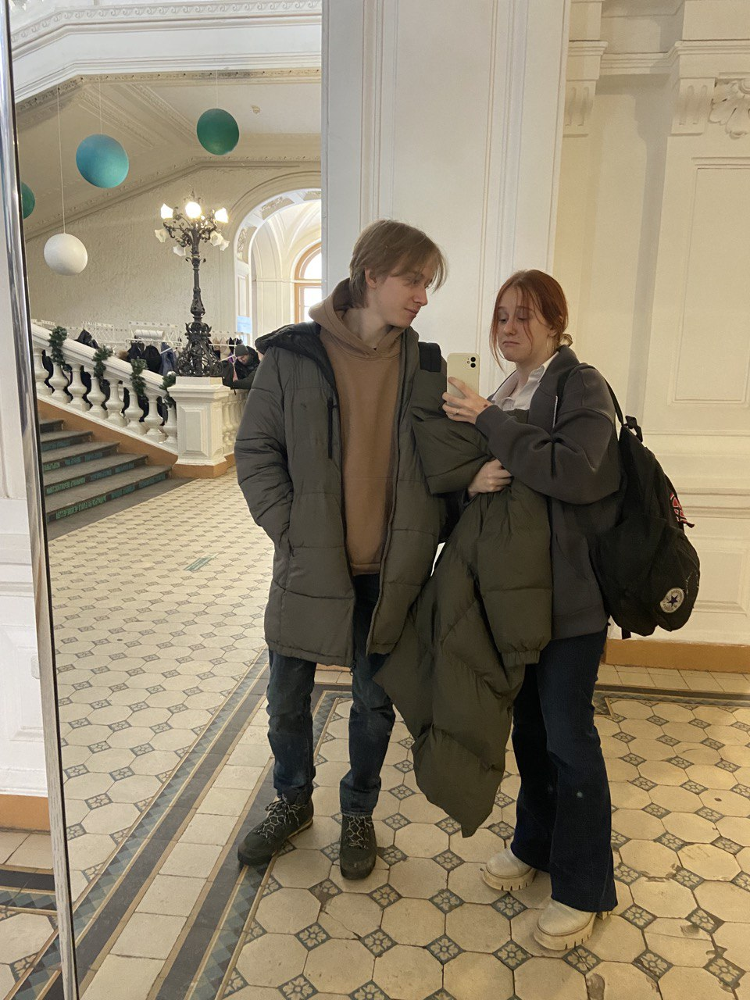
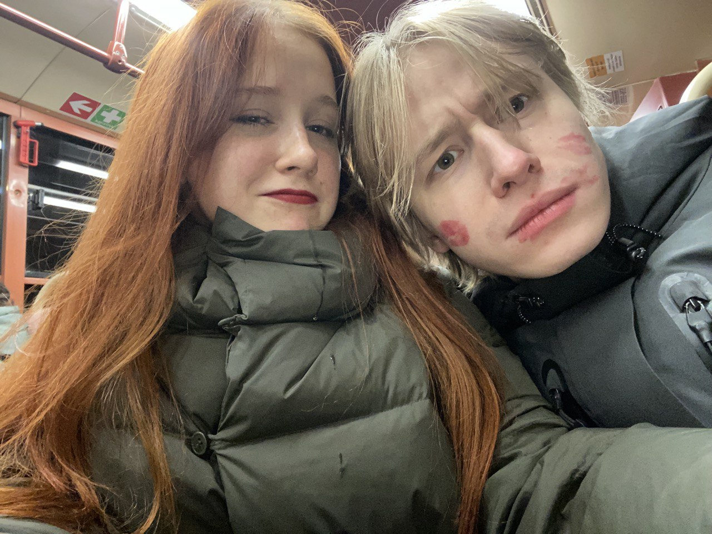
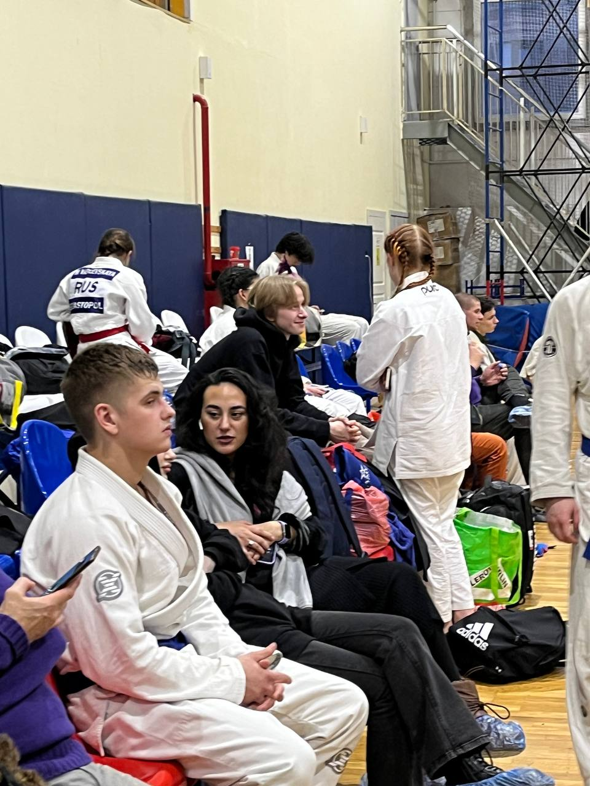
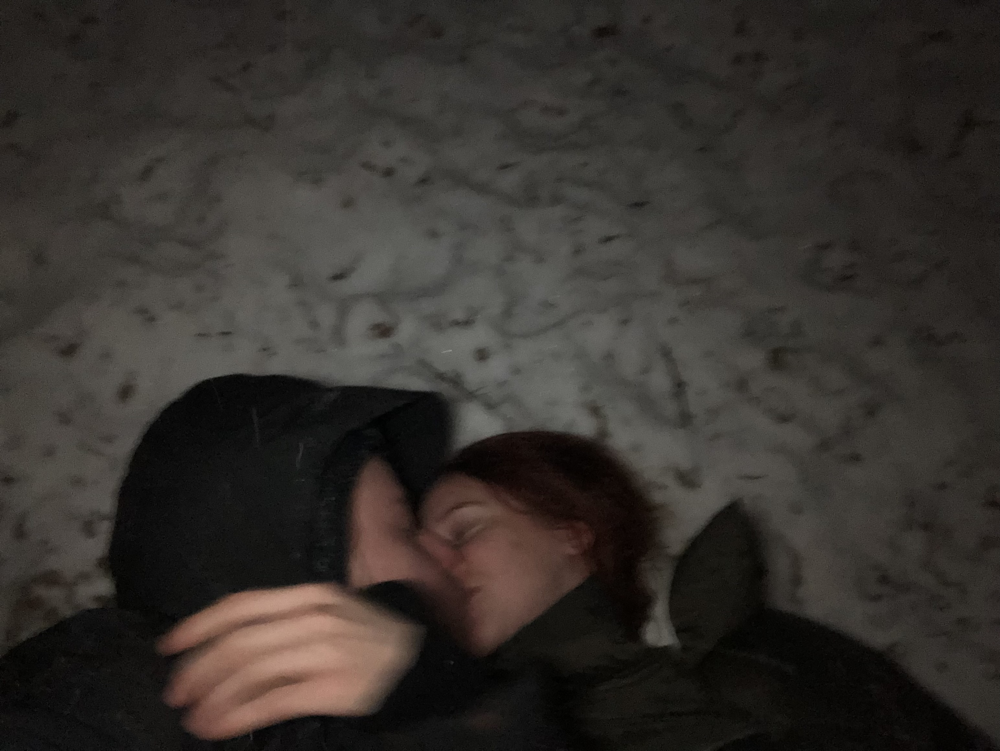
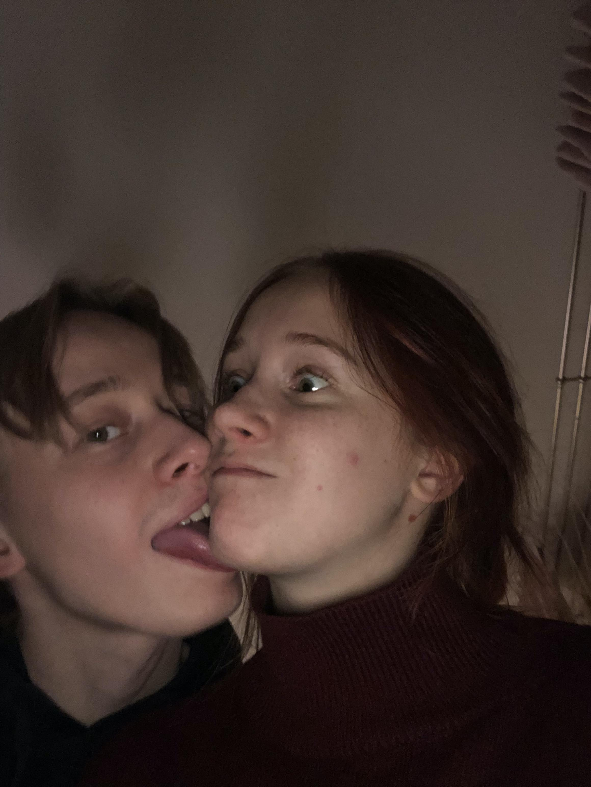

<div class="canvas-container">
  <canvas id="heart"></canvas>
  <div class="overlay">
    <div class="gallery">
    
    
    
    
    
    </div>
  </div>
</div>
<style>
/* number of images*/
.gallery {
  --d: 10s;
  /* duration */
  display: grid;
  width: 220px;
}

.gallery > img {
  grid-area: 1/1;
  width: 100%;
  aspect-ratio: 1;
  object-fit: cover;
  border: 10px solid #f2f2f2;
  box-shadow: 0 0 4px #0007;
  z-index: 2;
  animation: slide var(--d) infinite, z-order var(--d) infinite steps(1);
}

.gallery img:last-child {
  animation-name: slide, z-order-last;
}

.gallery > img:nth-child(1) {
  animation-delay: calc(0*var(--d));
  --r: -10deg;
}

.gallery > img:nth-child(2) {
  animation-delay: calc(-0.2*var(--d));
  --r: 9deg;
}

.gallery > img:nth-child(3) {
  animation-delay: calc(-0.4*var(--d));
  --r: 8deg;
}

.gallery > img:nth-child(4) {
  animation-delay: calc(-0.6*var(--d));
  --r: -19deg;
}

.gallery > img:nth-child(5) {
  animation-delay: calc(-0.8*var(--d));
  --r: -5deg;
}

@keyframes slide {
  10% {
    transform: translateX(120%) rotate(var(--r));
  }
  0%, 100%, 20% {
    transform: translateX(0%) rotate(var(--r));
  }
}
@keyframes z-order {
  10%, 20% {
    z-index: 1;
  }
  80% {
    z-index: 2;
  }
}
@keyframes z-order-last {
  10%, 20% {
    z-index: 1;
  }
  90% {
    z-index: 2;
  }
}
/* body {
  margin: 0;
  min-height: 100vh;
  display: grid;
  place-content: center;
  background: #CDB380;
  overflow: hidden;
} */

.canvas-container {
  position: relative; /* Создаем относительную систему координат */
  width: 100%;       /* Ширина контейнера (можно настроить) */
  height: 100%;      /* Высота контейнера (можно настроить) */
  left: 0;
  top: 0;
}

.overlay {
  position: absolute; /* Абсолютное позиционирование относительно .canvas-container */
  top: 50%;           /* Центрируем по вертикали */
  left: 50%;          /* Центрируем по горизонтали */
  transform: translate(-50%, -50%); /* Точное центрирование */
  text-align: center; /* Центрируем текст внутри блока */
  color: white;       /* Цвет текста */
  font-family: Arial, sans-serif;
  z-index: 10;        /* Убедимся, что текст находится поверх canvas */
}


#heart {
  display: block;
  width: 100%;        /* Занимает всю доступную ширину контейнера */
  height: 100%;       /* Занимает всю доступную высоту контейнера */
  background-color: lightgray; /* Для визуализации canvas */
}

.overlay {
  position: absolute; /* Абсолютное позиционирование относительно .canvas-container */
  top: 50%;           /* Центрируем по вертикали */
  left: 50%;          /* Центрируем по горизонтали */
  transform: translate(-50%, -50%); /* Точное центрирование */
  text-align: center; /* Центрируем текст внутри блока */
  color: white;       /* Цвет текста */
  font-family: Arial, sans-serif;
  z-index: 10;        /* Убедимся, что текст находится поверх canvas */
}
canvas {
  position: absolute;
  left:0;
  top: 0;
  width: 100%;
  height: 100%;
  background-color: rgba(0,0,0,.2);
}
</style>
<script>
window.requestAnimationFrame =
    window.__requestAnimationFrame ||
        window.requestAnimationFrame ||
        window.webkitRequestAnimationFrame ||
        window.mozRequestAnimationFrame ||
        window.oRequestAnimationFrame ||
        window.msRequestAnimationFrame ||
        (function () {
            return function (callback, element) {
                var lastTime = element.__lastTime;
                if (lastTime === undefined) {
                    lastTime = 0;
                }
                var currTime = Date.now();
                var timeToCall = Math.max(1, 33 - (currTime - lastTime));
                window.setTimeout(callback, timeToCall);
                element.__lastTime = currTime + timeToCall;
            };
        })();
window.isDevice = (/android|webos|iphone|ipad|ipod|blackberry|iemobile|opera mini/i.test(((navigator.userAgent || navigator.vendor || window.opera)).toLowerCase()));
var loaded = false;
var init = function () {
    if (loaded) return;
    loaded = true;
    var mobile = window.isDevice;
    var koef = mobile ? 0.5 : 1;
    var canvas = document.getElementById('heart');
    var ctx = canvas.getContext('2d');
    var width = canvas.width = koef * innerWidth;
    var height = canvas.height = koef * innerHeight;
    var rand = Math.random;
    ctx.fillStyle = "rgba(0,0,0,1)";
    ctx.fillRect(0, 0, width, height);

    var heartPosition = function (rad) {
        //return [Math.sin(rad), Math.cos(rad)];
        return [Math.pow(Math.sin(rad), 3), -(15 * Math.cos(rad) - 5 * Math.cos(2 * rad) - 2 * Math.cos(3 * rad) - Math.cos(4 * rad))];
    };
    var scaleAndTranslate = function (pos, sx, sy, dx, dy) {
        return [dx + pos[0] * sx, dy + pos[1] * sy];
    };

    window.addEventListener('resize', function () {
        width = canvas.width = koef * innerWidth;
        height = canvas.height = koef * innerHeight;
        ctx.fillStyle = "rgba(0,0,0,1)";
        ctx.fillRect(0, 0, width, height);
    });

    var traceCount = mobile ? 20 : 50;
    var pointsOrigin = [];
    var i;
    var dr = mobile ? 0.3 : 0.1;
    for (i = 0; i < Math.PI * 2; i += dr) pointsOrigin.push(scaleAndTranslate(heartPosition(i), 210, 13, 0, 0));
    for (i = 0; i < Math.PI * 2; i += dr) pointsOrigin.push(scaleAndTranslate(heartPosition(i), 150, 9, 0, 0));
    for (i = 0; i < Math.PI * 2; i += dr) pointsOrigin.push(scaleAndTranslate(heartPosition(i), 90, 5, 0, 0));
    var heartPointsCount = pointsOrigin.length;

    var targetPoints = [];
    var pulse = function (kx, ky) {
        for (i = 0; i < pointsOrigin.length; i++) {
            targetPoints[i] = [];
            targetPoints[i][0] = kx * pointsOrigin[i][0] + width / 2;
            targetPoints[i][1] = ky * pointsOrigin[i][1] + height / 2;
        }
    };

    var e = [];
    for (i = 0; i < heartPointsCount; i++) {
        var x = rand() * width;
        var y = rand() * height;
        e[i] = {
            vx: 0,
            vy: 0,
            R: 2,
            speed: rand() + 5,
            q: ~~(rand() * heartPointsCount),
            D: 2 * (i % 2) - 1,
            force: 0.2 * rand() + 0.7,
            f: "hsla(0," + ~~(40 * rand() + 60) + "%," + ~~(60 * rand() + 20) + "%,.3)",
            trace: []
        };
        for (var k = 0; k < traceCount; k++) e[i].trace[k] = {x: x, y: y};
    }

    var config = {
        traceK: 0.4,
        timeDelta: 0.01
    };

    var time = 0;
    var loop = function () {
        var n = -Math.cos(time);
        pulse((1 + n) * .5, (1 + n) * .5);
        time += ((Math.sin(time)) < 0 ? 9 : (n > 0.8) ? .2 : 1) * config.timeDelta;
        ctx.fillStyle = "rgba(0,0,0,.1)";
        ctx.fillRect(0, 0, width, height);
        for (i = e.length; i--;) {
            var u = e[i];
            var q = targetPoints[u.q];
            var dx = u.trace[0].x - q[0];
            var dy = u.trace[0].y - q[1];
            var length = Math.sqrt(dx * dx + dy * dy);
            if (10 > length) {
                if (0.95 < rand()) {
                    u.q = ~~(rand() * heartPointsCount);
                }
                else {
                    if (0.99 < rand()) {
                        u.D *= -1;
                    }
                    u.q += u.D;
                    u.q %= heartPointsCount;
                    if (0 > u.q) {
                        u.q += heartPointsCount;
                    }
                }
            }
            u.vx += -dx / length * u.speed;
            u.vy += -dy / length * u.speed;
            u.trace[0].x += u.vx;
            u.trace[0].y += u.vy;
            u.vx *= u.force;
            u.vy *= u.force;
            for (k = 0; k < u.trace.length - 1;) {
                var T = u.trace[k];
                var N = u.trace[++k];
                N.x -= config.traceK * (N.x - T.x);
                N.y -= config.traceK * (N.y - T.y);
            }
            ctx.fillStyle = u.f;
            for (k = 0; k < u.trace.length; k++) {
                ctx.fillRect(u.trace[k].x, u.trace[k].y, 1, 1);
            }
        }
        //ctx.fillStyle = "rgba(255,255,255,1)";
        //for (i = u.trace.length; i--;) ctx.fillRect(targetPoints[i][0], targetPoints[i][1], 2, 2);

        window.requestAnimationFrame(loop, canvas);
    };
    loop();
};

var s = document.readyState;
if (s === 'complete' || s === 'loaded' || s === 'interactive') init();
else document.addEventListener('DOMContentLoaded', init, false);
</script>
